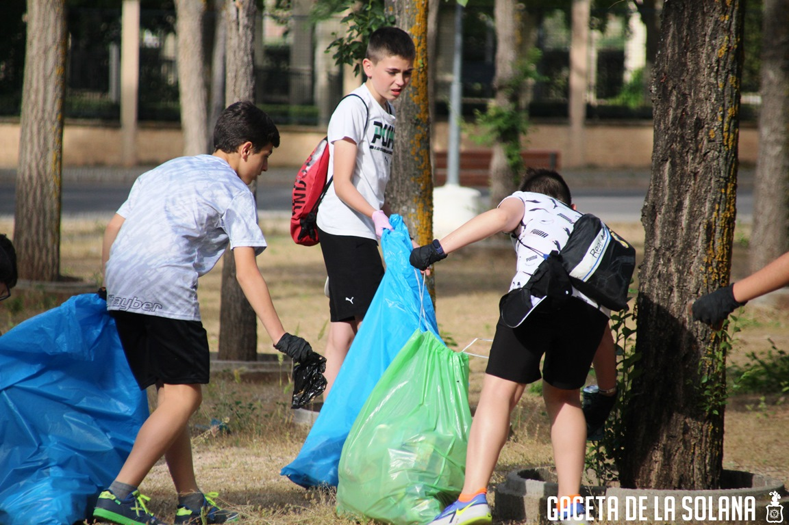

Cuidado comunitario • Palmira, Colombia
Las campañas de limpieza organizadas por estudiantes y voluntarios están ayudando a mantener los espacios públicos de Palmira libres de basura. Estas actividades fortalecen el sentido de pertenencia y promueven el cuidado del entorno.
Mantener los parques limpios no solo mejora la estética de la ciudad, sino que también previene problemas de salud pública y protege a animales como aves y perros comunitarios.
Los parques muestran una notable mejora en limpieza y conservación. Varios colegios han adoptado zonas para mantenerlas limpias de forma permanente a través de jornadas mensuales.
Regresar